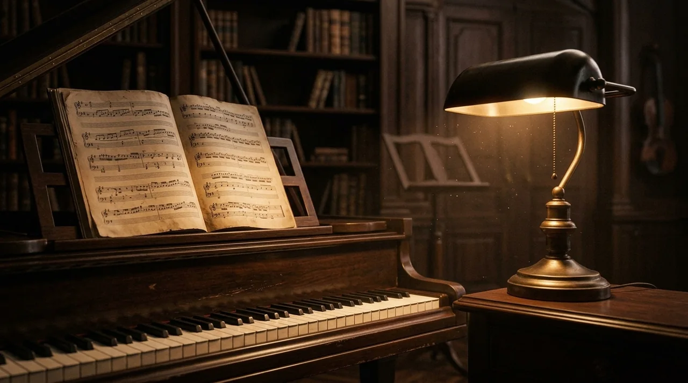

NOTAÇÃO · ALTURA · OITAVA
Leia o pentagrama

Escolha piano, violão, flauta ou violino: timbres sintetizados, sem downloads. Sua escolha fica salva neste navegador.
Identifique as notas naturais e suas oitavas. Dó4 é o dó central. Responda a dez perguntas sem limite de tempo.
Conte linhas e espaços de baixo para cima; a clave define a referência.
Oriente-se: sua mão é um pentagrama
Imagine sua mão de lado, com cinco dedos apontando para a direita. De baixo para cima, cada dedo representa uma linha e cada intervalo entre dedos representa um espaço. É uma ajuda para memorizar, não uma digitação instrumental.
Toque em um dedo ou espaço para ver a nota no pentagrama e ouvi-la com o instrumento escolhido.
Você também pode usar estes botões, ordenados de cima para baixo, para explorar com conforto ou pelo teclado.
Selecione uma das nove posições.
A mão representa as cinco linhas e os quatro espaços internos. Notas fora do pentagrama usam linhas suplementares. Este explorador não altera a pergunta do exercício.
Na clave de sol, as linhas de baixo para cima são Mi4, Sol4, Si4, Ré5 e Fá5. Na clave de fá são Sol2, Si2, Ré3, Fá3 e Lá3. Na clave de dó na terceira linha são Fá3, Lá3, Dó4, Mi4 e Sol4; a linha central indica o dó central. Cada linha ou espaço avança uma nota: Dó, Ré, Mi, Fá, Sol, Lá, Si.
Este exercício trabalha a leitura visual de notas naturais; não avalia duração, armaduras de clave nem execução instrumental.
Continue com o ditado melódico →Leia com fluência
Pratique três claves e sete armaduras, sem limite ou com tempo por nota.